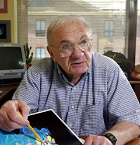

Saturday, 10 December 2005
Jack Strominger
80th Birthday
Symposium
NRB Conference Center, Harvard Medical School
77 Avenue Louis Pasteur. Boston Mass.
Hosted by the Department of Molecular and Cellular Biology, Harvard University
| 9 a.m. |
Welcome and opening remarks
Hidde Ploegh
Member,Whitehead Institute for Biomedical Research, and Professor of Biology, MIT |
| 9:05 – 9:30 |
Herman Eisen
Professor Emeritus, Center for Cancer Research and Dept. of Biology, MIT.
“The Clonal Selection Hypothesis Revisited.” |
| 9:30 - 9:45 |
Dario Vignali
Associate Member, St. Jude Children’s Research Hospital.
“It All Began with T Cells . . . .“ |
| 9:45 – 10:00 |
Anthony DeFranco
Professor and Chair, Department of Microbiology and Immunology, UC-San Francisco.
Membrane Proteins and the Immune System: from MHC to BCR and TLRs.” |
| 10:00 – 10:30 |
Pamela Bjorkman
Professor of Biology, HHMI Investigator, California Institute of Technology
“MHC Homologs in Immune and Non-immune Recognition.” |
| 10:30 – 11:00 |
Coffee Break |
| 11:00 – 11:30 |
Richard Losick
Harvard College Professor and Maria Moors Cabot Professor of Biology
“Did the Mouse Steal an Antimicrobial Gene from a Bacterium?” |
| 11:30 – 11:45 |
Marco Colonna
Professor, Department of Pathology and Immunology, Washington University School of Medicine.
“A Perfect Match: NK Cells and MHC Supertypes.” |
11:45 –
12:15 p.m. |
Peter Parham
Professor of Structural Biology and Microbiology and Immunology, Stanford University.
“On Unintelligent Design.” |
| 12:15 – 1:30 |
Lunch, Elements Cafeteria |
| 1:30 – 1:45 |
Alexander Rich
William Thompson Sedgwick Professor of Biophysics, MIT.
“Thoughts about J.L. Strominger.” |
| 1:45 – 2:15 |
Peter Cresswell
Professor of Immunobiology, Yale University School of Medicine.
“An Unhealthy Obsession with MHC Molecules.” |
| 2:15 – 2:45 |
Stanley Nathenson
Professor, Depts. Of Cell Biology, Microbiology and Immunology, Albert Einstein College of Medicine.
“Studies on Unraveling the Mysteries of the MHC, TCR, and T cell costimulation.” |
| 2:45 – 3:00 |
Jim Kaufman
Head, Division of Immunology, Institute for Animal Health, Compton UK.
“Evolution of the MHC: Genomic Organization Determines Function.” |
| 3:00 – 3:30 |
Coffee Break |
| 3:30 – 4:00 |
Timothy Springer
Latham Family Professor of Pathology, Center for Blood Research, Harvard Medical School.
“Signal Transmission across the Plasma Membrane.” |
| 4:00 – 4:15 |
Mike Krangel
Professor of Immunology, Duke University Medical Center.
“How T Cell Receptor Genes Rearrange.” |
| 4:15 – 4:30 |
Matt Mescher
Professor and Kimmelman Chair in Immunology, Director, University of Minnesota Center for Immunology
“Signals for Programming Effector and Memory Development by CD8 T Cells.” |
| 4:30 – 4:45 |
Martin Hemler
Professor, Department of Pathology (Harvard Medical School) and Dana-Farber Cancer Institute.
“Exploring Integrin-Mediated Cell Adhesion in the Lateral Dimension.” |
| 4:45 – 5:00 |
Hidde Ploegh
Member,Whitehead Institute for Biomedical Research, and Professor of Biology, MIT.
“Class I MHC Molecules: How to Get Rid of Them, and Why.“ |
This symposium is a public event and everyone is welcome. Breaks and Lunch will be provided. Parking is available, free, at the New Research Building (NRB) Conference Center, Harvard Medical School, see www.theconfcenter.harvard.edu for driving directions and maps. For further information, contact Kimberly Kriz, MCB, 617-495-4448 or . Also see Jack's faculty web page and Jack Strominger's Scientific Journey.
Symposium sponsored by the generous contributions from:
|